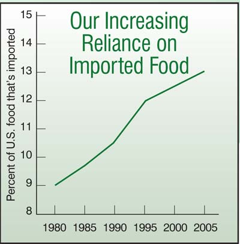

How To Find The Best Food
20 ways to get fresh, sustainable food in your neck of the woods.
By Barbara Pleasant and Tabitha Alterman
August/September 2006
Would you like to reduce air pollution, recycle your money into your community, support family farmers and enjoy food that tastes better and is more nutritious than what you can buy at the supermarket? Easy! Eat more locally produced food.
Buying fresh local food also is the easiest way to avoid eating processed food with added sugar, fat and preservatives. Locally grown food tastes better because it’s fresher, and growers can plant better-tasting varieties if their fruits and vegetables won’t need to stand up to long-distance shipping.
“It’s so easy to be seduced by year-round produce at the supermarket, but when you allow yourself to be seduced all the time, you’re choosing a shadow image of the real thing,” says Deborah Madison, author of Local Flavors: Cooking and Eating from America’s Farmers’ Markets. “Fragile things that don’t ship well, like apricots and lettuce, are really special when they are fresh,” Madison says.
The case for eating locally grown food is strong, but how do you make it happen? Across the continent, hundreds of people have sought answers by challenging themselves to eat more local foods - sometimes nothing but - for a day, a month or even a year (see “Taking On a Local Food Challenge," below). To help you find your comfort level within the local food movement, here are 20 great ways to make eating locally work for you.
- Start somewhere. Begin by taking baby steps, such as committing to spend $10 a week on locally grown foods.
- Do it now. With gardens and farmers markets in full swing, August has emerged as high season for local eating. In 2005, the first week of August was proclaimed “Eat In, Act Out Week” by The Food Project, a Massachusetts-based program in which more than 100 teenagers produce 250,000 pounds of locally grown food each year. This year’s dates are July 31 through August 6, and Eat In, Act Out Week has already become an international phenomenon. Last year, Food Project volunteers took to the streets of Boston to hand out locally grown carrots. In Vancouver, British Columbia, teen local-food activists descended on area farmers markets, giving out informative ribbons and great recipes. Within a week, visits to the British Columbia Farmers’ Markets Web site doubled.
- Phase in gradually. “As an ‘everything in moderation’ kind of guy, I’d find a strict local food diet fascinating but obsessive and intimidating,” says Peter Marks, program coordinator for the Appalachian Sustainable Agriculture Project in Asheville, N.C. He suggests a more gradual approach: “Every week or month, replace one food in your diet that’s provided by a big, faraway company with a locally grown food.”
- Become a tailgate shopper. Check out farmers markets, roadside farm stands and tailgate markets (where parking lots are temporarily transformed into areas of commerce), and don’t be afraid to ask questions about where the food is grown.
- Pick your own. Strawberries, blueberries and many other kinds of fruit often are available from farms that allow you to do the harvesting (or not, if you prefer to pay for the cost of picking). Many fruits are easy to freeze, and apples will keep all winter in a cool corner of the garage.
- Join a CSA. Short for Community Supported Agriculture, a CSA is a member-supported farm, in which shares are paid back to members in weekly deliveries of fresh produce, flowers and sometimes eggs and dairy products. Twenty years after the first American CSA was established at Indian Line Farm in South Egremont, Mass., CSAs now number in the thousands (see “Finding Local Food,” below).
- Enlarge your garden. The most local food of all comes from your own garden. Plant a new garden, enlarge the one you already have, or extend your growing season by using row covers and cloches.
- Connect with a community garden. No space to garden? North America is home to more than 18,000 community gardens, in which members work individual plots. Locate a garden near you through the American Community Gardening Association.
- Think like a squirrel. It’s easy to take locally abundant foods for granted when they’re in season, but you can enjoy many locally produced foods out of season by stocking up. Storing big baskets of hazelnuts (in the Northwest) or pecans (in the Southeast) will come naturally if you start thinking like a squirrel. Look for foods that keep well, such as nuts, honey, winter squash and sweet potatoes - and stock up.
- Explore new foods. Bringing more local produce into your kitchen may leave you wondering what to do with unusual things such as Jerusalem artichokes, kohlrabi or mizuna. “I get requests all the time from CSAs asking permission to put my recipes into their delivery boxes,” Madison says. “I always say yes.” Get a good produce-based cookbook and don’t be reluctant to ask for recipe ideas from growers.
- Rediscover old treasures. If you were to turn back the clock 100 years, what would gardeners in your area be growing? Try regional heirloom varieties of garden standbys such as beans, squash, tomatoes and melons, which were selected for their flavors and reliability in the days when personal survival often depended upon a garden’s success. Appalachian “greasy” beans or creamy New England-bred butternut squash can help open the door to great flavors from the past.
- Double your recipes. Time for cooking is often in short supply, but you can cut cooking time in half by making large batches and eating the leftovers another day. In an age when the average American spends only 32 minutes a day preparing food, strategy is crucial to increasing your consumption of local food.
- Track down specials and buy in bulk. You can save money and eat more local food by looking for great buys on oddly shaped potatoes, overripe peaches or slightly bruised apples (they make great applesauce). Get to know local growers as you visit orchards, farm stands or tailgate markets, and ask them to let you know when they have great deals.
- Look for like-minded restaurants. Many restaurants are part of the local food loop, too. Several of the databases listed in “Finding Local Food” include restaurants. If you’re traveling and want to try local food restaurants away from home, you can use the Chefs Collaborative member list to plan your next food safari. The 1,000-plus Chefs Collaborative members seek to “promote sustainable cuisine by celebrating the joys of local, seasonal and artisanal cooking.” Many regional groups such as Vermont Fresh Network host gourmet meals at member restaurants, featuring local produce, meats and wines.
- Freeze some meat. As proof that more people are looking for meat from grass-fed animals that aren’t pumped up on antibiotics, hormones and unnatural high-grain diets, the Eat Wild database gets more than 4,000 visits a day. It’s a good place to find locally grown meat or dairy products, but because most of the sources are small farms (rather than meat-packing plants), you may have to buy a quarter of a cow, pig or lamb. The meat can be cut and wrapped to order, and you can pick it up already frozen.
- Log your food miles. Cultivate an awareness of how far your food travels. When Rich Pirog, Food Systems Program Leader for the Leopold Center for Sustainable Agriculture at Iowa State University, tracked the miles traveled for 16 types of produce, he found that locally sourced fruits and vegetables such as apples, lettuce and tomatoes traveled an average of 56 miles, compared to 1,494 miles - nearly 27 times farther - for the same fruits and vegetables delivered through conventional retail channels. Things get stickier with combination foods, strawberry yogurt for example. Pirog came up with 2,216 miles by adding up the distance traveled for the yogurt’s milk, sugar and strawberries. That figure could be slashed by 90 percent if you buy plain yogurt and stir in some locally grown honey and fruit.
- Follow the trail. Food miles translate into greenhouse gas emissions, which are highest for foods that travel by air (South American tomatoes), or in refrigerated trucks (dairy, meat and seafood products). In comparison, grain products that travel by rail carry a much lower emission rating. Weight is a huge factor in the financial and environmental costs of transporting food. Put high priority on finding local sources for heavy, truck-transported items such as meat and dairy products, as well as highly perishable foods that travel long distances by air. The Life Cycles Project of Vancouver Island, British Columbia, has an online food miles calculator that figures greenhouse gas emissions for incoming food.
- Go to school. Several states have programs that bring local food into school cafeterias. (Search by state at www.farmtoschool.org.) The U.S. Department of Agriculture publishes a guide to help bring together communities, schools and farms (visit www.fns.usda.gov and search for “small farms/school meals”). Or you might want to actually grow food right at a local school, which then can be served to the students. That’s how it’s done at the Edible Schoolyard at Martin Luther King Middle School in Berkeley, Calif., which is considered to be a model program. Numerous chapters of Slow Food USA have provided funds and labor for the establishment of school food gardens from Arizona to Maine.
- Share the journey. Teaming up to locate the foods you want can alleviate frustration. For example, a small group of “concerned culinary adventurers” in the San Francisco Bay area launched www.locavores.com, which has become a meeting place for fans of local food. In a Maryland suburb of Washington, D.C., Renee Brooks Catacalos and Kristi Bahrenburg Janzen joined forces to make Finding Local Foods easier during their month-long local food challenge (see “Taking On a Local Food Challenge”).
- Have a party. Instead of counting time or distance, simply enjoy the pleasures of local food by organizing a potluck meal in which everything must be local. Keep your fingers crossed that someone will splurge on handmade goat cheese, and don’t forget some local wine, beer or juice. If you’re organizing a big catered event, the Society for Nutrition Education has a downloadable brochure to help you line up local food resources.
Most food in the United States travels between 1,500 and 2,000 miles before being eaten.
- Leopold Center for Sustainable Agriculture, Iowa State University
Behind each calorie of food in the typical American diet stands seven to 10 calories of fossil fuel energy.
- University of Michigan Center for Sustainable Systems
The food industry uses about a fifth of the oil consumed in the United States.
- University of Michigan Center for Sustainable Systems
In the United States, agricultural imports are rising twice as fast as exports. Over the past two decades, imports of fruits, vegetables and grains increased by more than 100 percent. Today, the typical American meal contains ingredients from at least five countries outside the United States.
- U.S. Department of Agriculture
Here’s the breakdown of food’s fossil fuel consumption: 20 percent consumed on the farm; 40 percent burned up in processing, packaging and shipping; another 40 percent is used to store and prepare the food.
- Chad Heeter, “My Saudi Arabian Breakfast”
Nonlocal food often is less nutritious. For example, bagged spinach loses about half its folate and carotenoids after being stored in refrigeration for just four days.
- Journal of Food Science
The average American farmer receives about 20 cents of every dollar spent on food. But when customers buy directly from the farm, the farmer gets the whole dollar.
- John Ikerd, Professor Emeritus of Agricultrual Economics, University of Missouri
Taking On a Local Food Challenge
Want to try eating only local food for a week, a month or a year? Whether you try the “Hundred Mile Diet,” expand your range to a 250 mile radius of your home or settle on something in between, the experience will be eye-opening.
In Vancouver, British Columbia, hundred-mile dieters J.B. MacKinnon and Alisa Smith quickly discovered they would have no bread or pasta; they were six weeks along (and 17 shared pounds lighter) before they scored a bag of wheat from a local mill. Meanwhile, Smith didn’t think much of MacKinnon’s idea of using turnip slices in place of bread to make a sandwich.
In Minnesota, Sunny Johnson is one of seven friends who have committed to eating locally for a year. “I finally feel at peace with the food I’m eating,” she says. “It tastes good and makes my body feel good. I know who grew it, who touched it and where it was gathered.”
In Maryland, Renee Brooks Catacalos and Kristi Bahrenburg Janzen took a two-family, month-long challenge. “The kids whined the first week, but as time went on, they got into the experiment,” Catacalos says. “Once you get used to farm-fresh food, regular store-bought fare tastes remarkably bland,” Janzen adds. (Read the full story about this two-family challenge.)
And how about the guy who started all this? One of the pioneers of the local food movement, Gary Nabhan, co-founder of Native Seeds/SEARCH, stuck with foods grown within 250 miles of his central Arizona home for a year, which included many native foods made from cacti, as well as mesquite tortillas and drought-resistant tepary beans. Nabhan’s book, Coming Home to Eat: The Pleasures and Politics of Local Foods, helped set the agenda for the local food movement. He writes, “My mouth, my tongue and my heart remind me what my mind too often forgets: I love the flavor of where I live, and all the plants and creatures I live with.”
Finding Local Food
Most states publish directories of farmers markets, CSAs and pick-your-own farms, which are easily found by typing “local food” and the name of your state into any Internet search engine. Or, you can use the national and regional databases listed below. Don’t forget to ask for local produce at your supermarket, too. Even the big national chains are getting more interested in stocking and selling local foods.
www.localharvest.org
Local Harvest is the biggest national searchable database for local food. You can search by location, type of source (farm, restaurant, co-op, etc.), or by an individual food.
www.foodsecurity.org/links.html
The Community Food Security Coalition can help you find every imaginable local food source, from a community garden to a regional organic network.
www.attra.ncat.org/attra-pub/localfood_dir.php
The state-by-state directory of the National Sustainable Agriculture Information Service (ATTRA) will take you to state, regional and local food sources.
www.csacenter.org
Hosted by Wilson College, the Robyn Van En Center for CSA Resources includes a national database of CSA farms and technical assistance for new CSA organizers.
www.ams.usda.gov/farmersmarkets/map.htm
The USDA lists hundreds of farmers markets by state, including location, hours and contact information.
www.eatwild.com
Search by state for grass-fed meat and dairy producers.
www.slowfoodusa.org
International organization of food lovers with active chapters in 42 states.
marketplace.chef2chef.net/farmer-markets/canada.htm
Each Canadian province publishes its own list of farmers markets; all can be linked to from the Chef 2 Chef culinary portal.
|
CHARLIE JACKSON/APPALACHIAN SUSTAINABLE AGRICULTURE PROJECT West Asheville, N.C. resident Michael Dickinson teaches his daughter, Lily |
 WILLIAM D. ADAMS Locally grown produce tastes better because it’s fresher, and growers can plant better-tasting varieties if their fruits and vegetables don’t need to stand up to the hazards of long-distance shipping. |
 CHARLIE JACKSON/APPALACHIAN SUSTAINABLE AGRICULTURE PROJECT Pete Dixon of Broadwing Farm in Hot Springs, N.C., roasts farm-grown red bell peppers at his local farmers market. |
|
 U.S. DEPARTMENT OF AGRICULTURE Our Increasing Reliance on Imported Food |
WALTER CHANDOHA |
|